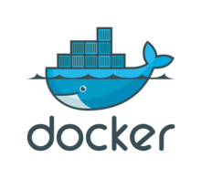
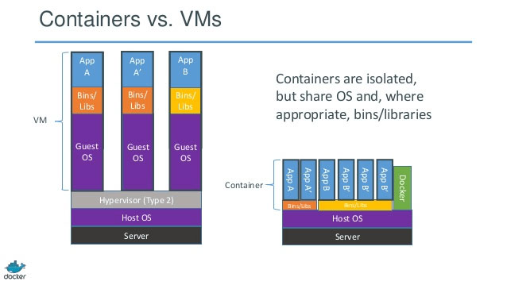

Introduction to Docker
Docker 101*
* Build, Ship, and Run Anywhere

A Containers image is a lightweight,
stand-alone, executable package of a piece of software that
includes everything needed to run it: code, runtime, system tools, system libraries, settings
and tiny ideas

Docker
is a tool designed to make it easier to
create,
deploy,
and
run applications by using containers
Docker Architecture

Docker Workflow
Find an Image on Docker Hub
docker search ubuntu
Pull an Image from Docker Hub
docker pull ubuntu
docker images
docker history ubuntu
Run an Image on Docker Host
cid=$(docker run -itd ubuntu)
echo $cid
docker ps
Stop an Container
docker stop $cid
Remove an Container
docker rm $cid
Remove an Image
docker rmi ubuntu
docker images